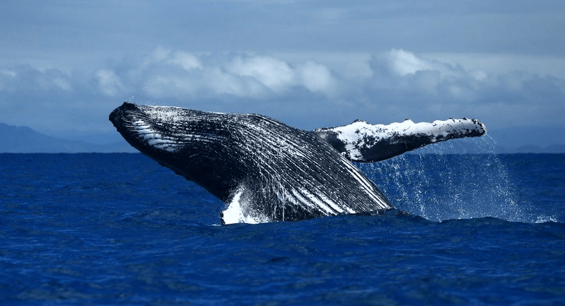

(Balaenoptera musculus)

la ballena azul puede ser residente de algún lugar o migratoria. Se reproduce y alumbra en agua tropicales y sub tropicales durante los meses de invierno
y se alimenta en aguas polares duramte los meses de verani. La poblacion de ballena azul del hemisferio norte migra a aguas del Ártico para alimetarse. Las ballenas azules,
presentes en todos los océanos del mundo, suelen vivir en solitario o en parejas, aunque ocasionalmente se las puede ver en pequeños grupos. Suelen pasar
el verano alimentándose en aguas polares, para llevar a cabo prolongadas migraciones hacia el ecuador conforme llega el invierno.
Caracteristicas
- Es el animal más grande del planeta
- Llega a pesar hasta 400,000 libras (180 toneladas)
- Miden unos 98 pies (29m) de largo
- Su corazón es del tamaño de un automóvil pequeño
- Durante la temporada principal de alimentación puede consumir alrededor de 7,936 libras (3,600 kg) de krill por día.
REGRESAR AL MENU